Готовые стилевые решения для создания сайта вашей свадьбы. Выберите шаблон и адаптируйте под себя.
Выберите понравившийся стиль оформления свадебного сайта
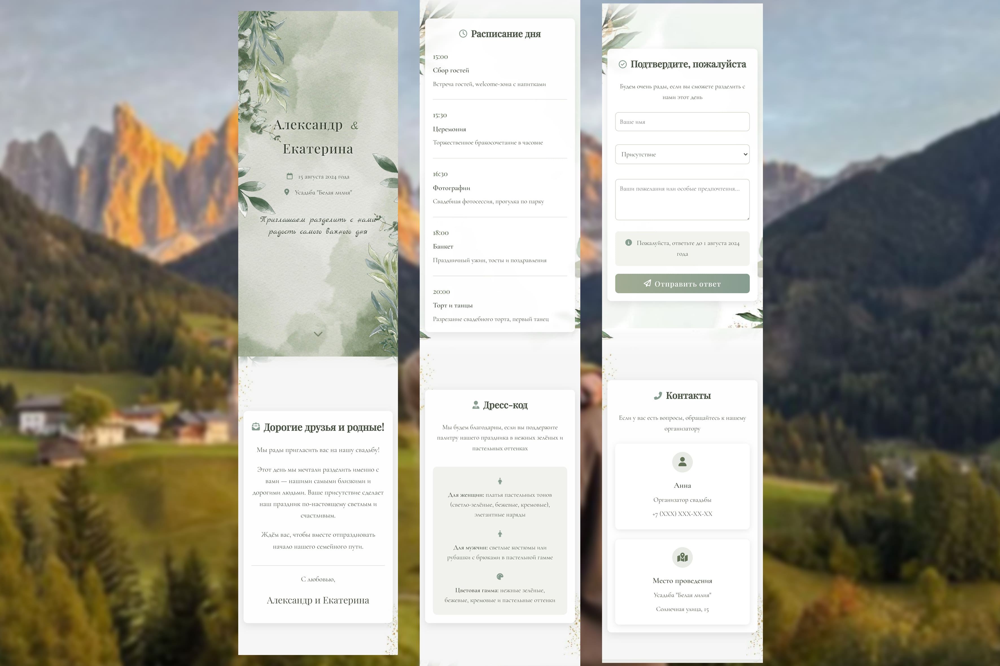
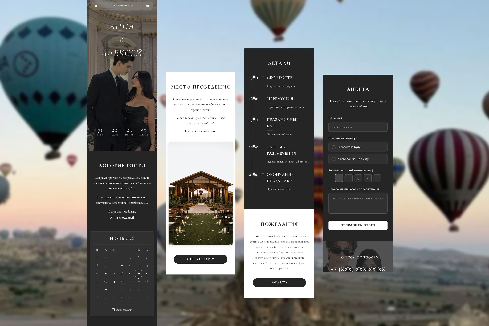
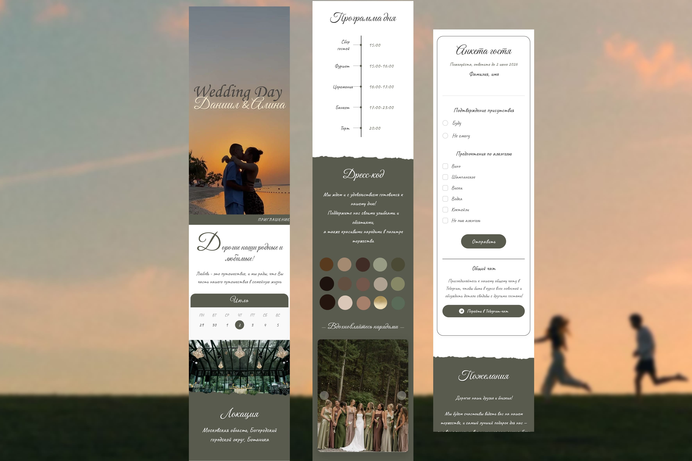
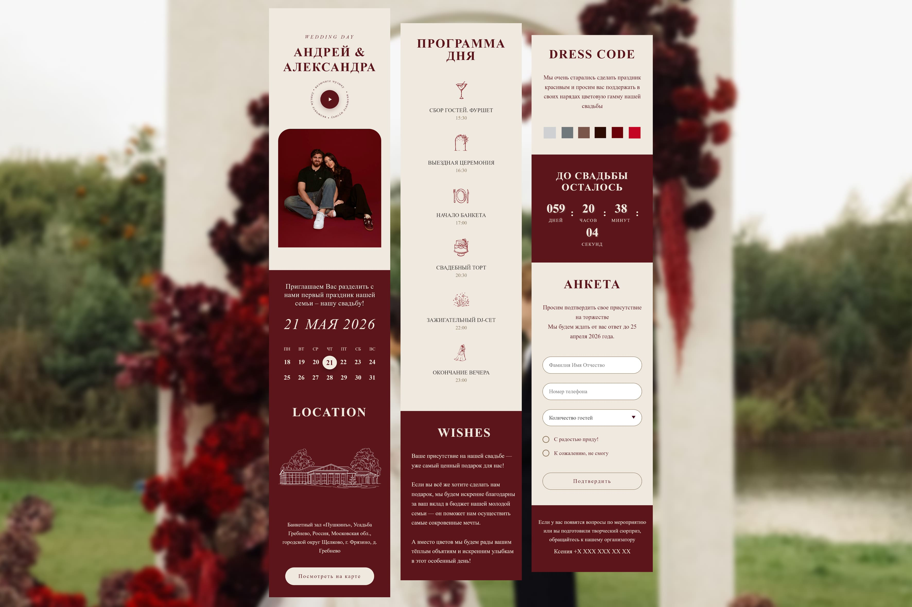
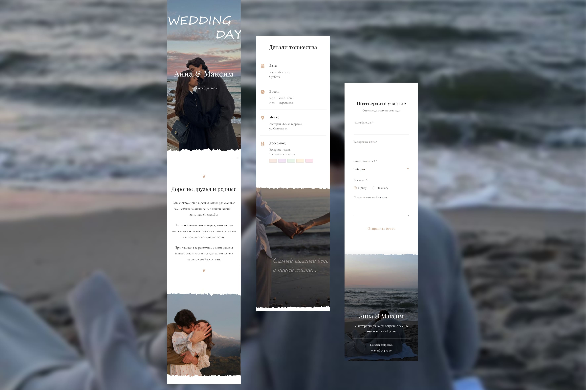
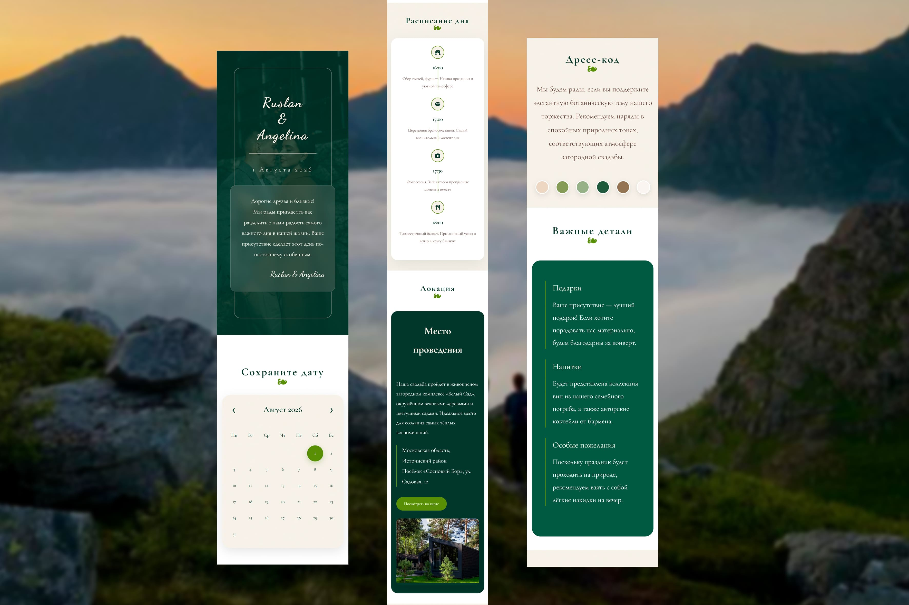
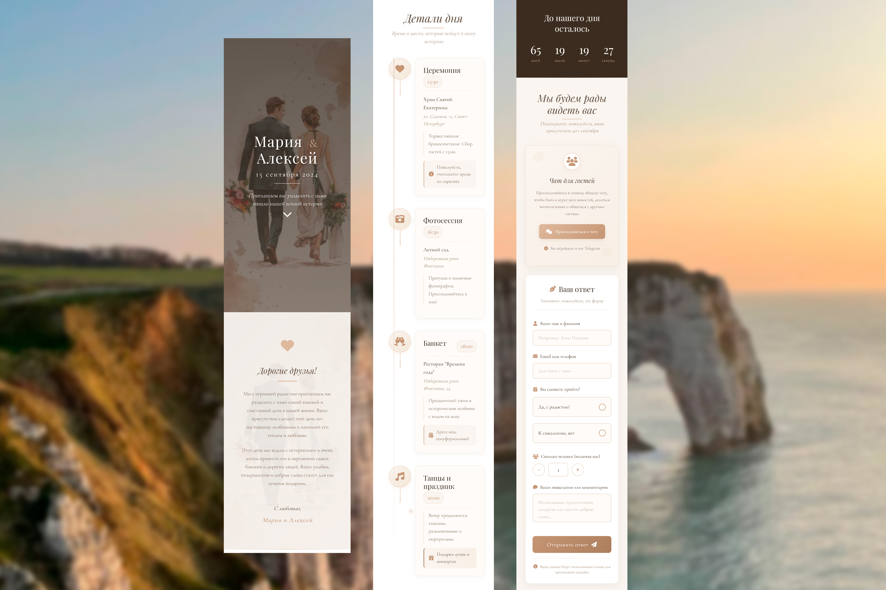
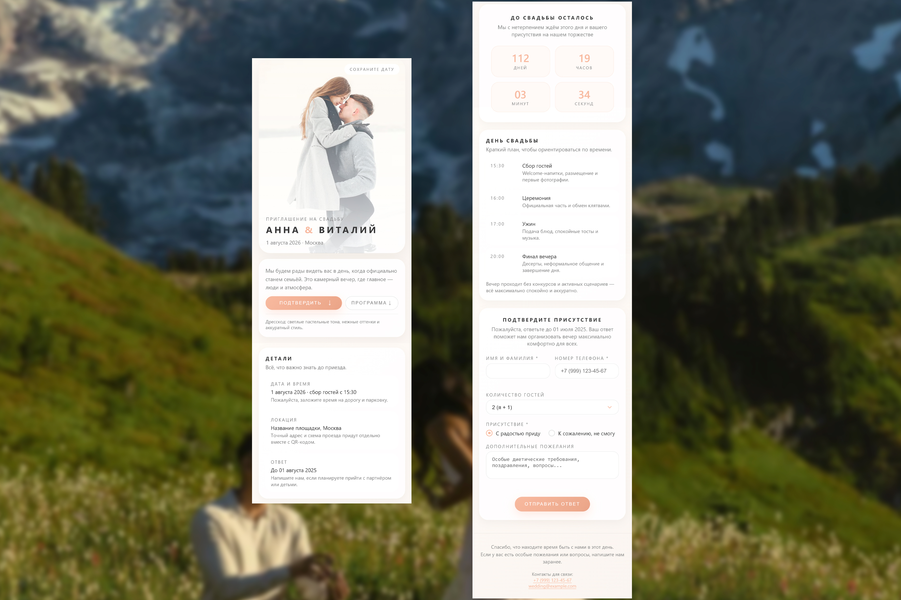
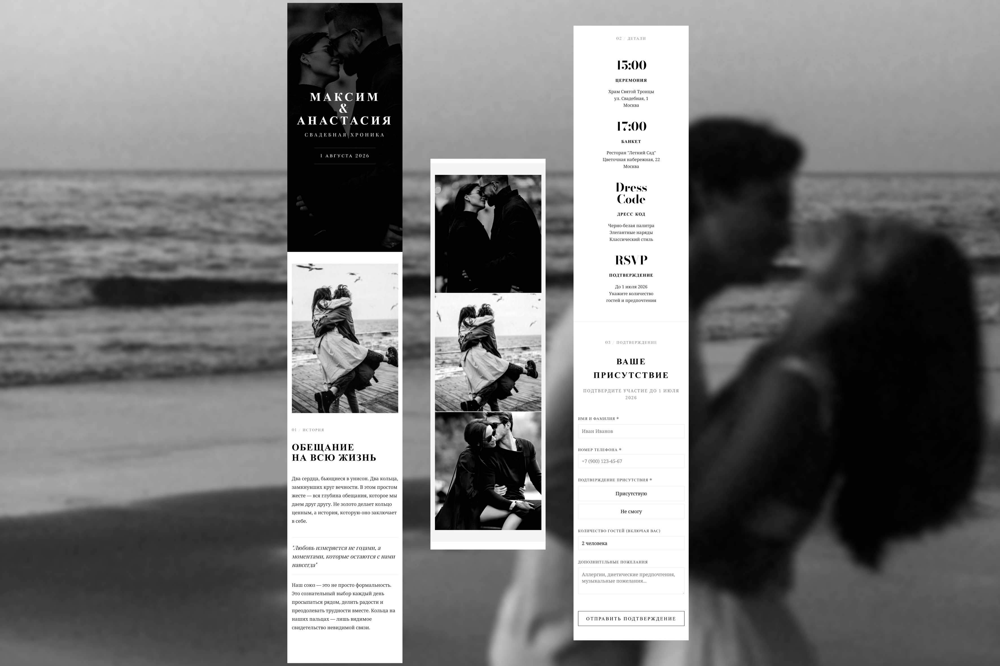
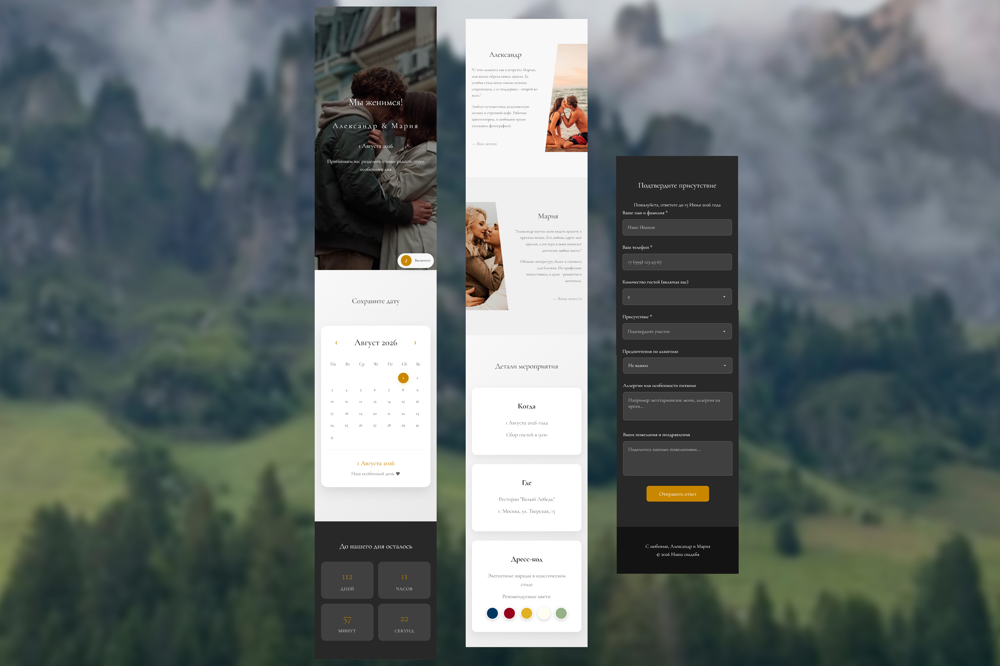
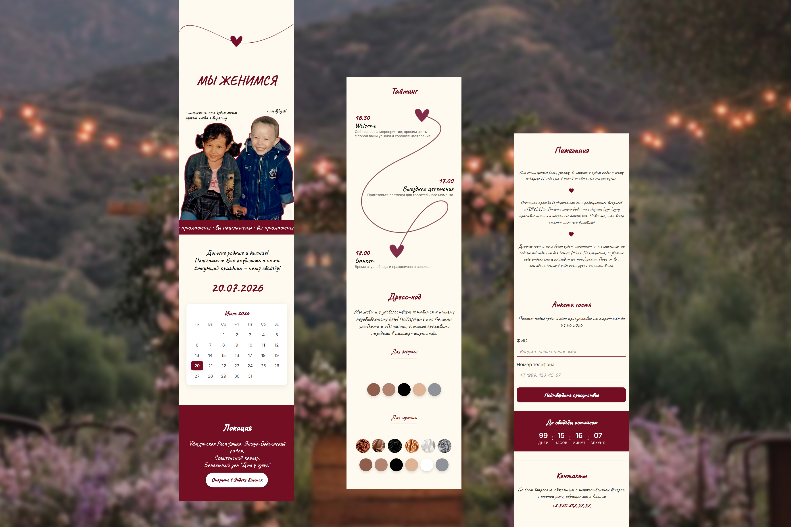
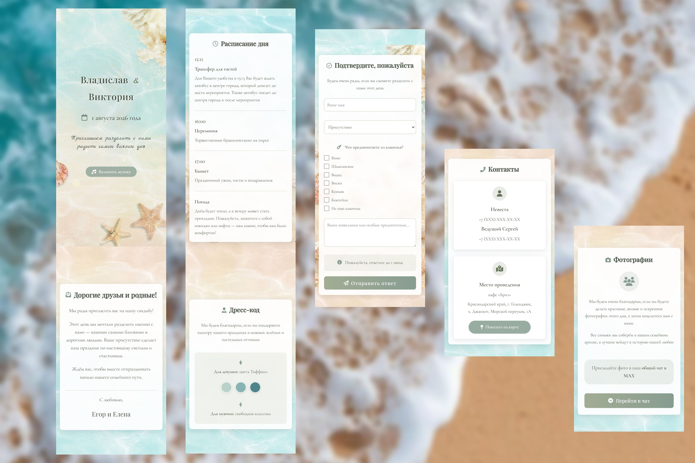
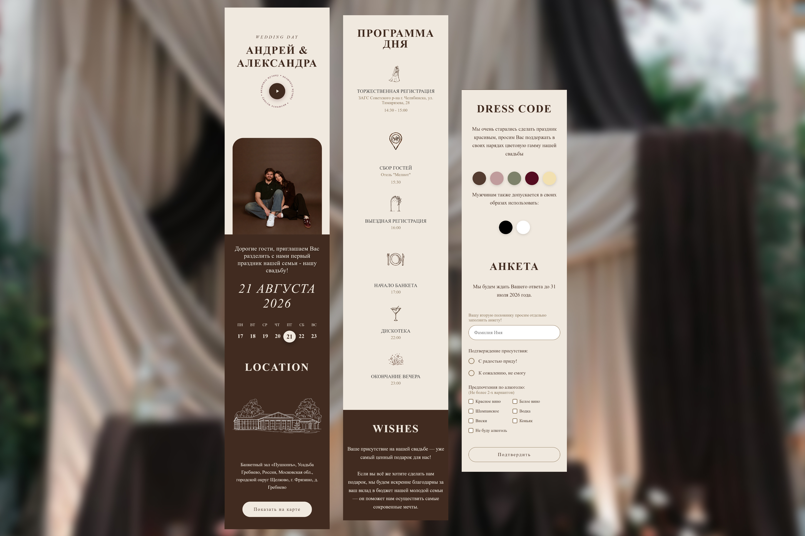
Этапы создания стилизованного свадебного сайта на основе готового решения
Просмотрите коллекцию и найдите визуальное решение, которое резонирует с атмосферой вашего праздника.
Для наполнения шаблона жизнью потребуются ваши уникальные материалы.
*Стилистика демонстрирует возможности интеграции любого контента.
Структура шаблона подстраивается под ваши пожелания и наполняется предоставленными материалами.
Настройка блоков и разделов
Работа с цветом и шрифтами
Анимации и финальная вычитка
Итоговый результат можно открыть на любом устройстве, чтобы оценить удобство и красоту.
Шаблоны разработаны с учётом удобства гостей и современных веб-стандартов.
Четкая сетка для имён, дат и программы дня
Удобная навигация до места проведения
Красивая демонстрация истории вашей пары
Выберите понравившийся стиль оформления, чтобы представить, как будет выглядеть ваш будущий свадебный сайт.
Смотреть шаблоныВсе шаблоны представлены в ознакомительных целях и могут быть адаптированы под ваш стиль.